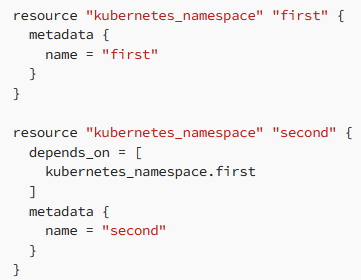

Depends_on
The depends_on meta-argument in Terraform is used to specify dependencies between resources. When Terraform creates your infrastructure, it automatically determines the order in which to create resources based on their dependencies. However, in some cases, you may need to manually specify the order in which resources are created, and that's where depends_on comes in

Lifecycle Block
In Terraform, a lifecycle block is used to define specific behaviors for a resource during its lifecycle. This block is used to manage the lifecycle of a resource in Terraform, including creating, updating, and deleting resources.
The lifecycle block can be added to a resource block and includes the following arguments:
- create_before_destroy: When set to true, this argument ensures that a new resource is created before the old one is destroyed. This can help avoid downtime during a resource update.
- prevent_destroy: When set to true, this argument prevents a resource from being destroyed. This can be useful when you want to protect important resources from being accidentally deleted.
- ignore_changes: This argument specifies certain attributes of a resource that Terraform should ignore when checking for changes. This can be useful when you want to prevent Terraform from unnecessarily updating a resource.
- replace_triggered_by: This is relatively new, came up in Terraform 1.2, and it is used to replace a resource if any attributes of that resource have changed, or even other resources have changed. Also, if you use count or for_each on the resource, you can even retrigger the recreation if there is a change to an instance of that resource (using count.index or each.key)
Dynamic Blocks
Dynamic Blocks in Terraform let you repeat configuration blocks inside of a resource based on a variable/local/expression that you are using inside of them. They make your configuration DRY (Don’t Repeat Yourself).
In a dynamic block, you can use the following parameters:
- for_each (required) → iterates over the value you are providing
- content (required) → block containing the body of each block that you are going to create
- iterator (optional) → temporary variable used as an iterator
- labels (optional) → list of strings that define the block labels. Never used them, tbh.
You can have nested dynamic blocks, or you can use dynamic blocks to avoid generating an optional block inside configurations.
 ===>
===>
The above code accomplishes the same thing, as the one that was repeating the blocks three times. Since we are using the for_each on the local variable, we are going to create the block three times.
When you are not defining an iterator, your iterator name will be exactly the name of the block, in our case is set.
Let’s use an iterator to make this clear. The dynamic block will change to:

As mentioned before, you can use dynamic blocks to avoid generating blocks altogether, so to achieve this in our example, what we can do is just make the local variable empty :